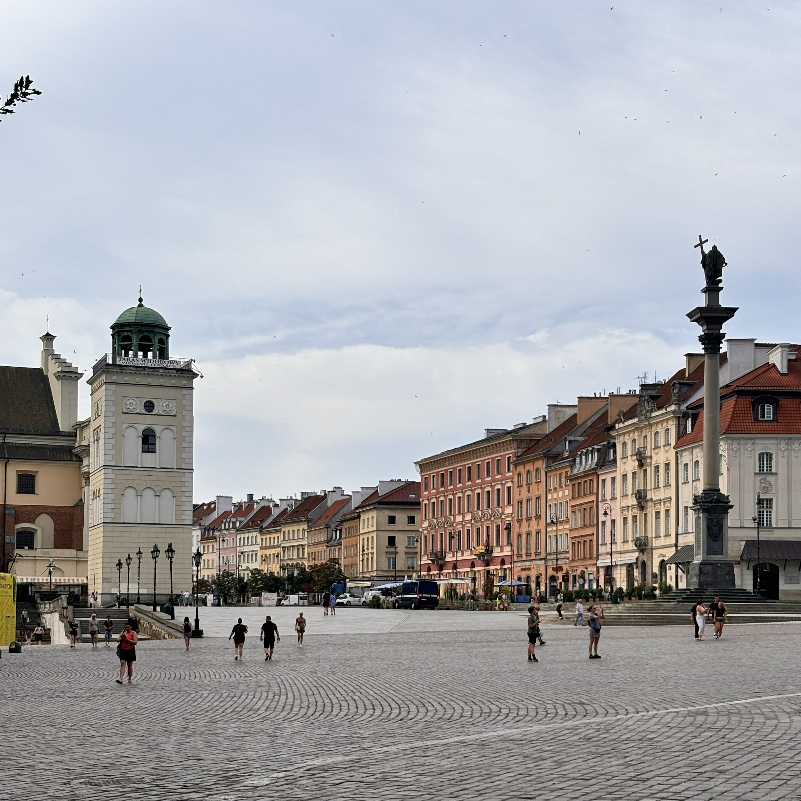
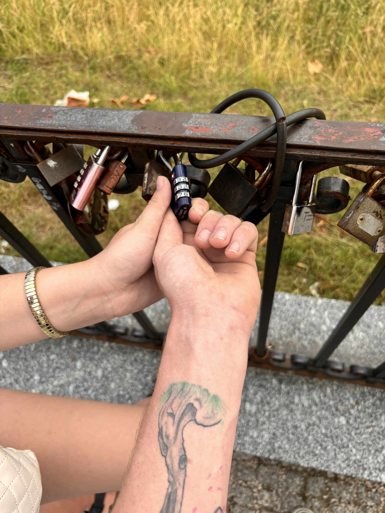
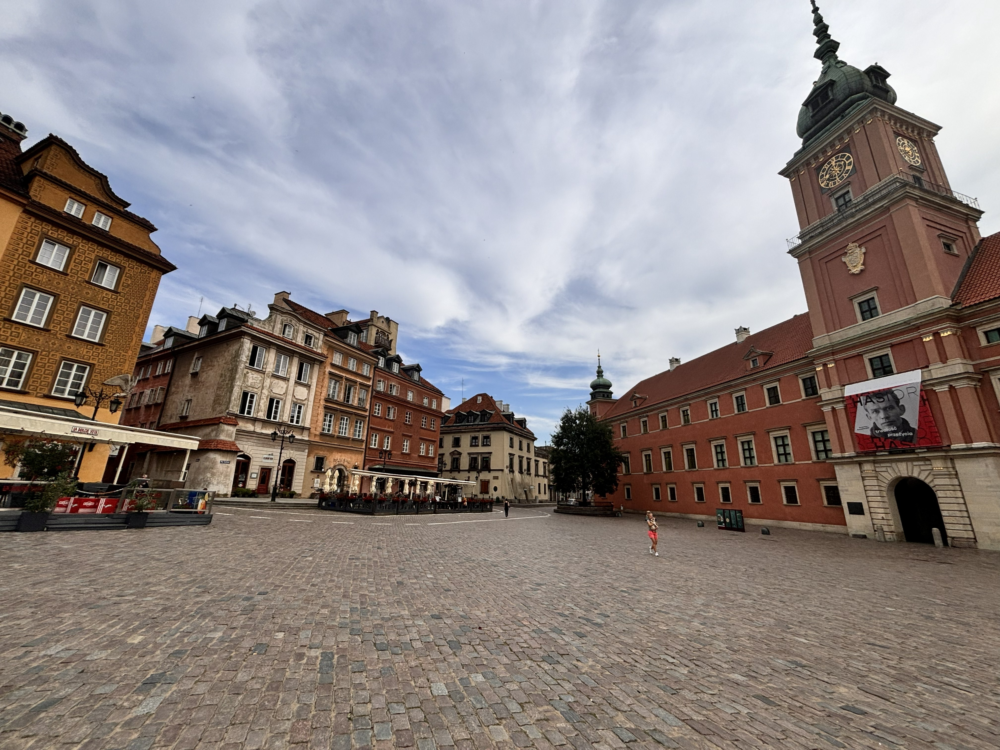
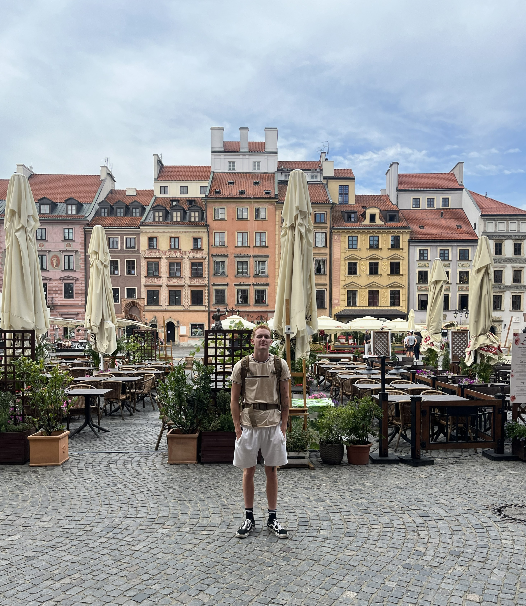

The quick snapshot
Stay details
Hotel / Airbnb
Name: Day trip only
Area: Warsaw
What I liked: Since we did not stay overnight, the one positive is that we were not locked into a longer stretch of a trip that already was not going well.
Getting there
Travel: Ecolines bus from Vilnius
Travel cost: $24.00
Arrival notes: Difficult, dirty, exhausting, and honestly horrible. By the time we got off the bus, we already felt drained, which made everything else hit harder. It was the kind of travel leg that makes you regret your decision before the actual destination even gets a fair chance.
Recommendation: Strangely...yea. I am helplessly loyal to cheap travel, even when it asks a little too much of me. The ride was uncomfortable, late, difficult, and irritating in nearly every possible way, but it was still a bargain. Since sleep wasn't in the cards for me, I spent most of the drive watching the Lithuanian and Polish fields blur past the window. Somewhere in all that quiet, my homesickness softened. The land looked almost like Arkansas, but not quite. Familiar in shape, not in spirit. See my “Piece on Arkansas” for more on how I really feel about my homeland.

While frustrating, it was a very beautiful city

Love lock bridge!

Colorful buildings


Where we ate and what we ordered
Food notes
What this part of the trip felt like
It never felt like we got to actually enjoy Warsaw. Between the bus ride, the closed businesses, and the general exhaustion, the whole food side of the day just felt like survival mode more than travel.
What we did, day by day
Day 1
Date: July 12, 2024
Main plan: Arrive from Vilnius, get into the city, explore Old Town, put our lock on the love bridge, and then head to the airport.
Best part: Leaving our lock on the bridge was probably the one little bright spot in an otherwise frustrating day.
Worth repeating? Only in a completely different way
What went wrong
Then what happened: The city felt dirty, the public restroom was awful even after paying for it, McDonald’s missed half our order, Old Town was empty and silent, and by the time we reached the airport, it still felt like nothing was open and there was nothing to do.
Worth remembering? Yes — mostly as a travel lesson